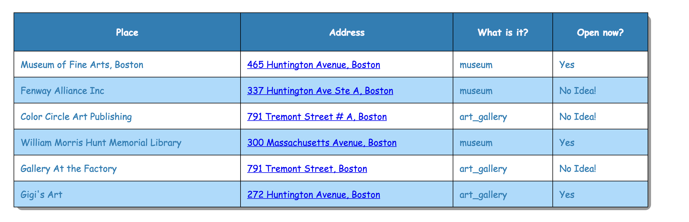

Places Worth Visting Tab
Feature Screenshots

The Places Worth Visting Tab searches for following places near by the user and provides the details:
Since the data has been pulled from Google Places API, if the data related to the place being open now is not present, I have simply put "No Idea!" Similarly, if the data related to the rating is not present from the API, then I am displaying "NA".
Disclaimer: I am sorry for any inconvienience caused due to this. However, I cannot help this much since the scope of this project is limited to pulling the data from Google Places API
View HTML Source
View JS Source
- Museums
- Amusement park
- Aquarium
- Art Gallery
- Zoo
- Shopping Mall
- Name
- Address
- Rating
- If the place is open currently
Since the data has been pulled from Google Places API, if the data related to the place being open now is not present, I have simply put "No Idea!" Similarly, if the data related to the rating is not present from the API, then I am displaying "NA".
Disclaimer: I am sorry for any inconvienience caused due to this. However, I cannot help this much since the scope of this project is limited to pulling the data from Google Places API
View HTML Source
View JS Source